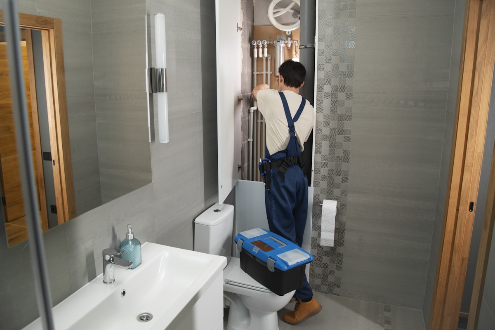

Homes & businesses
01 / Core service
Drain cleaning
Slow, gurgling, or fully blocked drains usually get worse with time. We identify where the stoppage sits, select the right cutting head or cable, and restore flow without relying on harsh chemical cleaners.
- Kitchen, bath, laundry, and floor drains
- Main sewer and branch-line stoppages
- Root, scale, and foreign-object removal